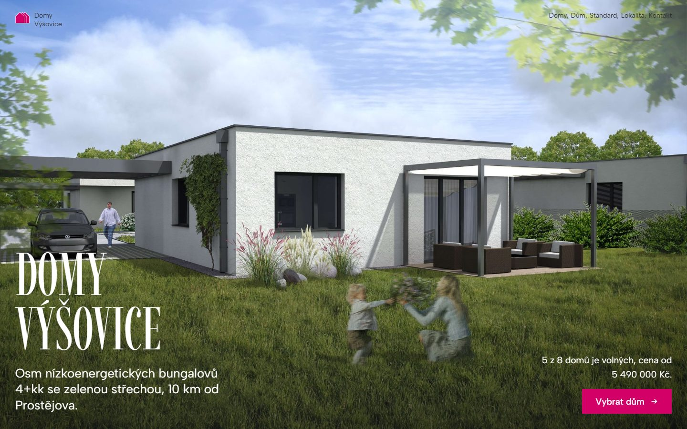
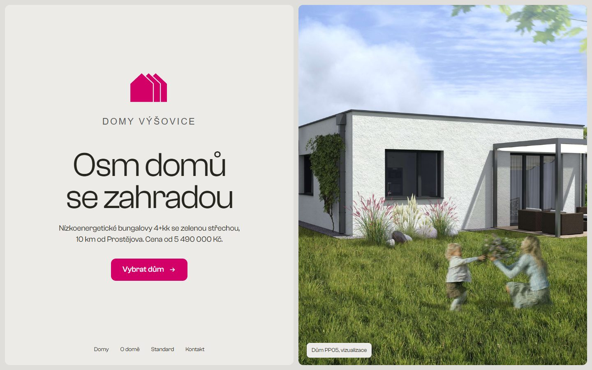

Návrh A: Místo
Fotografie přes celou obrazovku, ceník jako tištěný list vedle klikací situace parcel.
Otevřít návrh →
Návrh B: Plán
Dělená obrazovka s pevnou fotkou, aktivní seznam domů propojený se situací a standard jako ceník.
Otevřít návrh →Jak šablona funguje
- Jeden základ, rodina webů
Rozvržení, typografie, úvodní animace loga a ovládání jsou společné. Každý projekt mění jen to, co je jeho: logo, fotografie, texty, lokalitu a nabídku domů. Weby tak působí jako jedna rodina.
- Nabídka domů jako data
Každý dům má číslo, pozemek, cenu, stav a polohu na situaci. Změna stavu z „volný“ na „rezervace“ se hned projeví v ceníku i na plánu.
- Úpravy bez programátora
Texty, fotografie a nabídku domů upravíte v administraci. Vzhled je uzamčený, takže se při úpravách nic nerozbije.
- Nový projekt
Zkopíruje se základ, nahraje se logo a fotografie, vyplní se obsah a připojí doména.